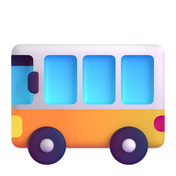

Nouns: singular and plural
Нэр үг: ганц ба олон тоо
By the end, you can turn one thing into many and say the ending right.
Энэ хичээлийн төгсгөлд нэг зүйлийг олон болгож, төгсгөлийг зөв дуудаж чадна.
One and many
Нэг ба олон
One
Нэг
Many
Олон
one book
нэг ном
two books
хоёр ном
one box
нэг хайрцаг
three boxes
гурван хайрцаг
one baby
нэг нялх хүүхэд
two babies
хоёр нялх хүүхэд
one child
нэг хүүхэд
four children
дөрвөн хүүхэд
Look at the end of each word.
Үг бүрийн төгсгөлийг ажигла.
Rule 1: most nouns add -s
Дүрэм 1: ихэнх нэр үг -s авна
Singular means one. Plural means more than one.
Singular гэдэг нь ганц тоо. Plural гэдэг нь олон тоо.
+ s
book books
ном
cat cats
муур
pen pens
үзэг
girl girls
охин
apple apples
алим
Rule 2: -s, -ss, -sh, -ch, -x add -es
Дүрэм 2: -s, -ss, -sh, -ch, -x-ээр төгссөн үг -es авна
-s-ss-sh-ch-x

bus buses
автобус
class classes
анги
dish dishes
таваг
watch watches
бугуйн цаг
box boxes
хайрцаг
The word gets one syllable longer: bus, bus-es.
Үг нэг үеэр уртасна: bus, bus-es.
Rule 3: words ending in -y and -f
Дүрэм 3: -y, -f-ээр төгссөн үг
consonant + yгийгүүлэгч + y
y ies
baby babies · city cities · family families
vowel + yэгшиг + y
+ s
boy boys · day days · key keys
-f, -fe
ves
knife knives · leaf leaves · wife wives
usually
ихэвчлэн
For -y, look at the letter just before it.
-y-ийн яг өмнөх үсгийг хар.
How the ending sounds
Төгсгөл хэрхэн дуудагдах вэ?
a sharp s
хатуу s
catsbooksmapsdesks
a buzzing z
зөөлөн z
dogspensdaysboys
a new syllable
шинэ үе
busesboxeswatchespages
One letter, three sounds.
Нэг үсэг, гурван дуудлага.
Irregular plurals
Дүрмийн бус олон тоо
man men
эрэгтэй хүн
woman women
эмэгтэй хүн
child children
хүүхэд
person people
хүн
tooth teeth
шүд
foot feet
хөл
No rule here. Learn them as pairs.
Энд дүрэм байхгүй. Хосоор нь цээжил.
women is said wi-min.
women-ийг "уимин" гэж дуудна.
Watch out!
Анхаар!
After a number, Mongolian keeps the word the same. English changes it.
Монголоор тооны дараа үг өөрчлөгддөггүй. Англиар өөрчлөгдөнө.
Буруу
three book
Зөв
three books
гурван ном
Буруу
two childs
Зөв
two children
хоёр хүүхэд
Буруу
many peoples
Зөв
many people
олон хүн
Model text: my school bag
Загвар эх: миний сургуулийн цүнх
This is my school bag.
Энэ миний сургуулийн цүнх.
I have two books and one notebook.
Надад хоёр ном, нэг дэвтэр бий.
I have three pens, five pencils and two boxes of crayons.
Надад гурван үзэг, таван харандаа, хоёр хайрцаг өнгийн харандаа бий.
My keys are in the small pocket.
Түлхүүрүүд маань жижиг халаасанд байгаа.
My lunch is two sandwiches and an apple.
Өдрийн хоол маань хоёр сэндвич, нэг алим.
Remember
Санаж ав
1
Most nouns + s · -s, -sh, -ch, -x + es · consonant + y ies
Ихэнх үг + s · -s, -sh, -ch, -x + es · гийгүүлэгч + y ies
2
man men · child children · person people
Дүрмийн бус үгсийг хосоор нь цээжил.
3
After a number, use the plural: three books
Тооны дараа олон тоо: three books